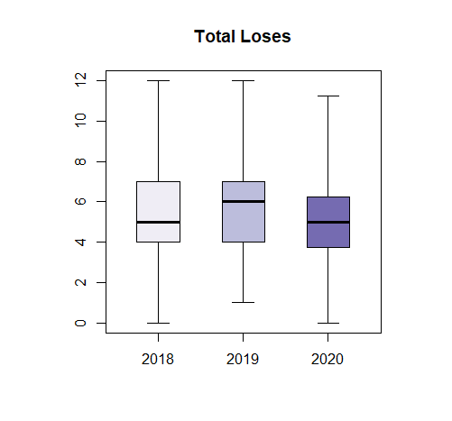
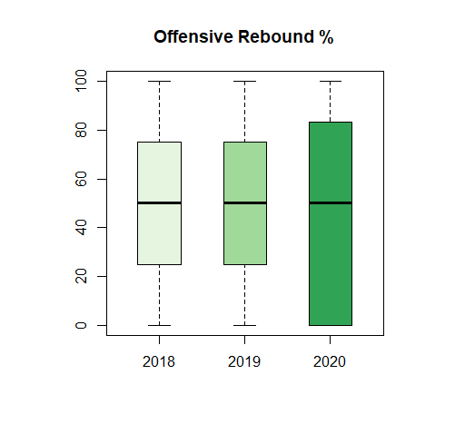

Did the COVID-19 response affect netball gameplay?
Background
The ANZ netball premiership competition began in 2018 and runs every year. Six top teams from around New Zealand play 47 games over 14 weeks. Each team plays 15 games with games held on Sundays, Mondays, and Wednesdays. A standard game plays with 15 minute quarters for a total game time of 60 minutes (Normal quarter game).
The covid-19 pandemic saw New Zealand’s lockdown where the government cancelled all gatherings, and public venues were closed. This meant lockdown deferred the ANZ premiership after the first round. The 2020 season was condensed from 14 weeks to 10 weeks. Teams played games on Fridays, Saturdays, Sunday’s, and Mondays with teams travelling to different cities to play. Netball NZ had concerns that players would not be able to train to their potential during lockdown. A less conditioned player would have an increased risk of injury. The format of the game also meant teams were playing several games in one weekend and had to travel more often resulting in decreased recovery times for players. To reduce the load on players and reduce risk of injury, quarters were shortened from 15 minutes to 12 minutes with a total game time of 42 minutes (shortened quarter game).
The client asked us to investigate whether these shortened quarters affect aspects of gameplay.
Analysis
Analysis was done using R. There were 2 different types of variables that the client identified as being important aspects of netball gameplay: Intensity and Accuracy
Intensity measurements

• the number of offensive team possessions in total (Offensive Efficiency - Opportunities)
• the total number of gain possessions (Gains Total)
• the total number of team possessions lost through anything other than a missed shot (Losses Total)
• the total number of individual ball handles/possessions within the quarter (Possessions)
• the number of ball possessions per minute in possession (Ball movement)
• the number of goals scored per minute in possession (Scoring Rate)
Accuracy measurements
 • the percentage of offensive possessions scored (Offensive Efficiency Rate (%))
• the percentage of opposition team possessions not scored (Defensive Efficiency Rate (%))
• the percentage of centre pass possessions taken into the shooting circle (CP to C%)
• the percentage of centre pass possessions scored (CP to Score%)
• the percentage of gain possessions taken into the shooting circle (Gain to C%)
• the percentage of gain possessions scored (Gain to Score %)
• the percentage of shooting scored (Shooting Accuracy%)
• the percentage of defensive rebounds successfully secured by the team (Offensive Rebounds %)
• the percentage of defensive rebounds successfully secured by the team (Defensive Rebounds %)
• the percentage of lost possessions (Loss Rate)
Conlusion
Gameplay didn't change a crazy amount. We can see from the box-plots that gameplay in COVID affected 2020 was more similar to gameplay in 2018. The competition started in 2018 and players were still finding their footing in this game. The new 2020 format probably forced players to find their footing again. This can be seen in the total gains, total loses, shooting accuracy, and loss rate.
We see that ball movement and possession increased in 2020 while still maintaining accuracy from the previous years. The shortened quarters meant that players felt the time limit more and felt pressure to pick up the game and move the ball around more.
Coaches would be interested in these findings to adapt player behaviour and strategies when facing the transition back to full 15-minute quarter games. Coaches can also use these findings when learning to adapt to rule changes. Netball organisations would benefit from looking at whether a move to these faster paced and more ‘exciting’ games would result in increased netball viewership.